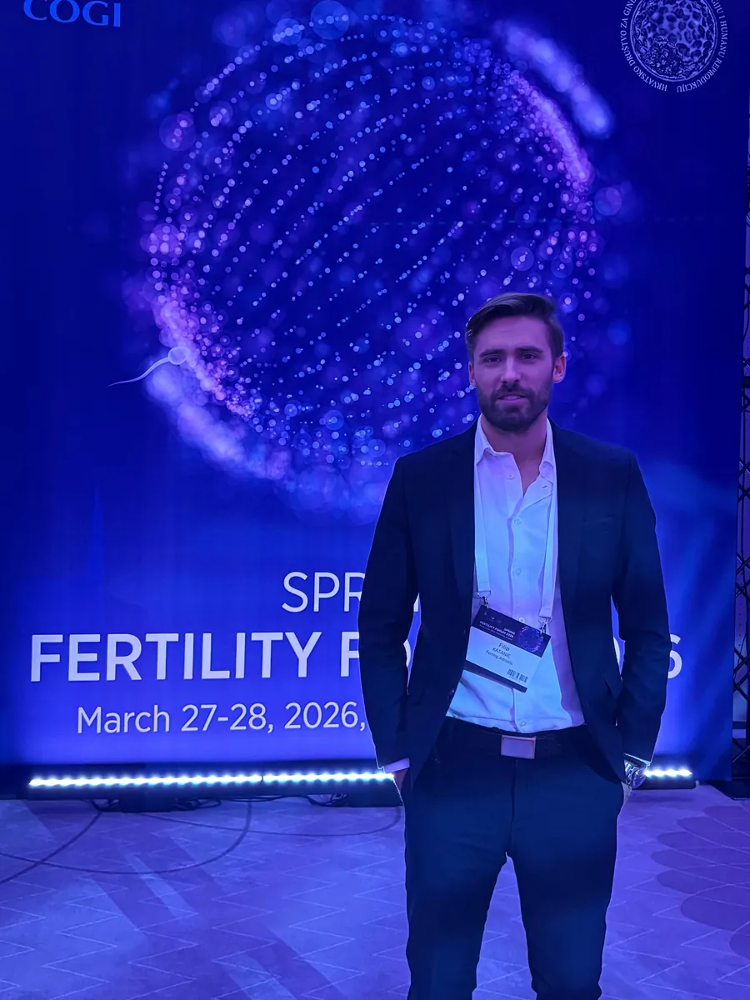
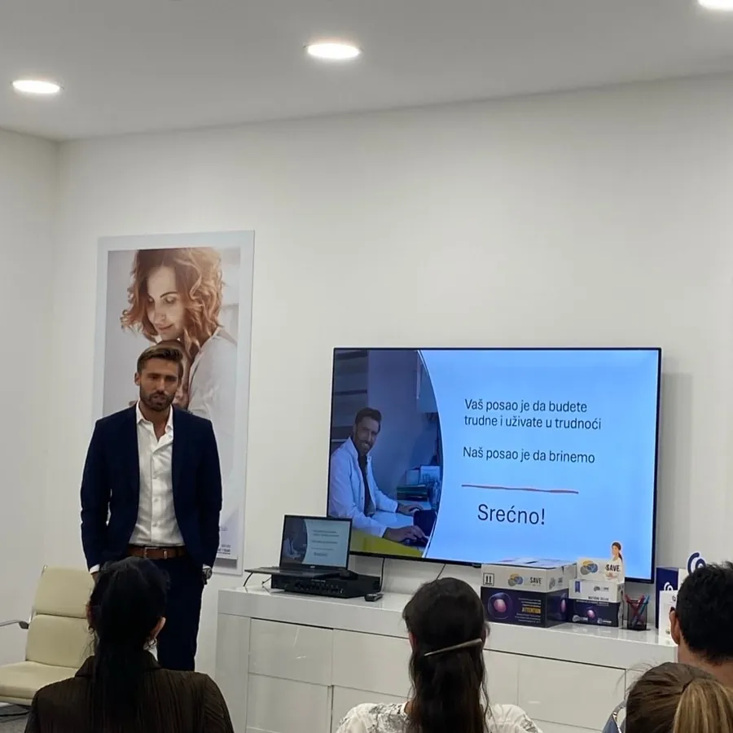
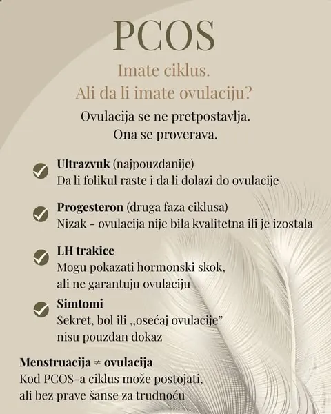
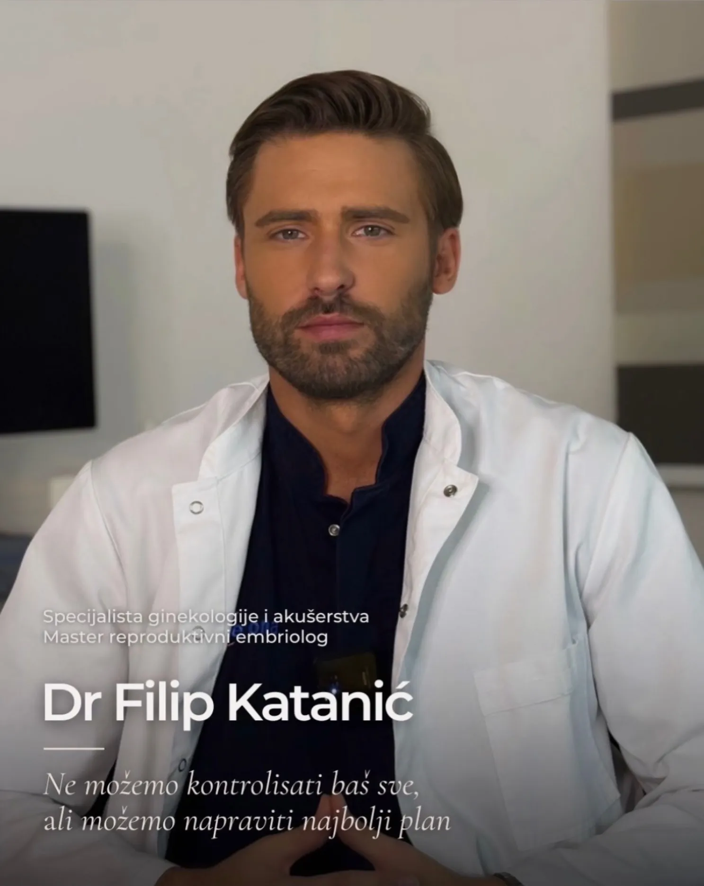
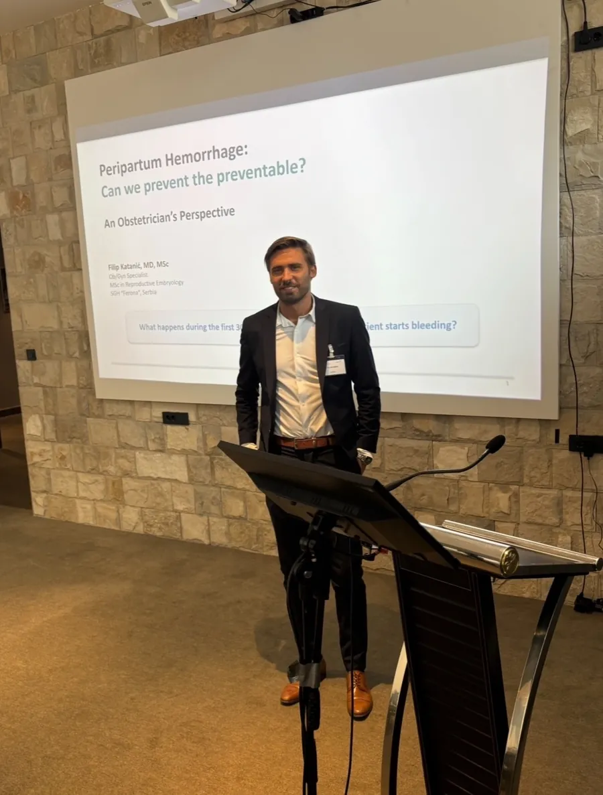

Kit komponenti · interno
Tipografija i boje
Fraunces (naslovi) + Karla (telo). Ovo je lokalni pregled komponenti — ne ide u site/.
H2 Fraunces 500
H3 Fraunces, sa šđčćž €
Telo teksta Karla, sa linkom u telu i dijakriticima: šđčćž ŠĐČĆŽ.
.seal (potpis A) · .badge (potpis C)
.frame--halo — varijante (portrait / wide / square)



KRITIČNO — .crop-hero / .crop-konferencija02 (structure.md 0.2)
hero.webp i konferencija-02.webp imaju utisnut tekst "Specijalista..."/"Ob/Gyn Specialist" u donjem/levom delu slike. Ispod: SAMO kroz propisane krop-klase — tekst mora biti fizički van kadra.


.credential · .venue · .venue-card
Lekar · Master reproduktivne embriologije · Član tima SB Ferona O meni →
Postupci se sprovode u okviru SB "Ferona", Šarplaninska 19, 21000 Novi Sad.
Kontakt i mapa.steps
Prvi razgovor
Uvid u dosadašnje nalaze i dogovor oko sledećih koraka.
Dijagnostika
Analize prema individualnoj proceni.
Plan
Predlog daljeg toka, uz jasno objašnjenje.
.faq akordeon
Primer uslovnog odgovora — "može", "individualno", "nije garancija".
Drugi primer odgovora za pregled akordeona.
.checklist
.illo — linijske ilustracije
Lightbox (klik na sliku)


.edu-carousel